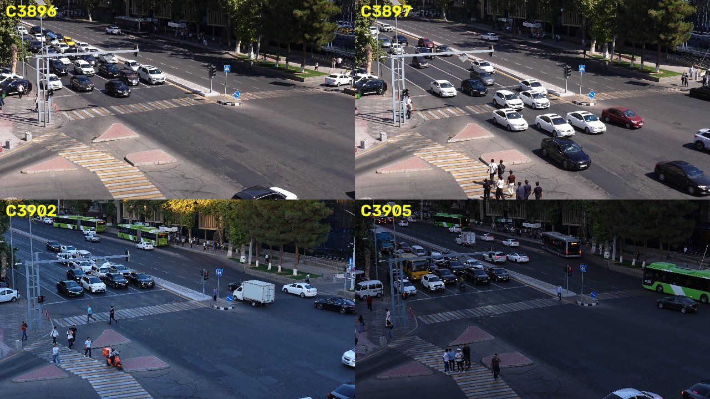
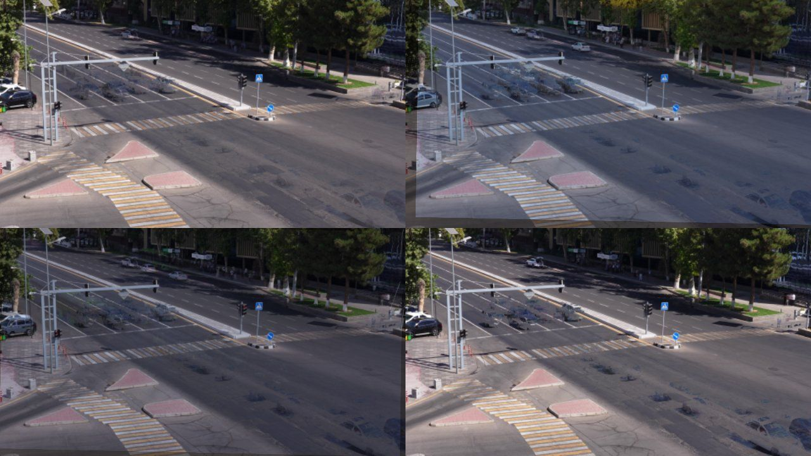
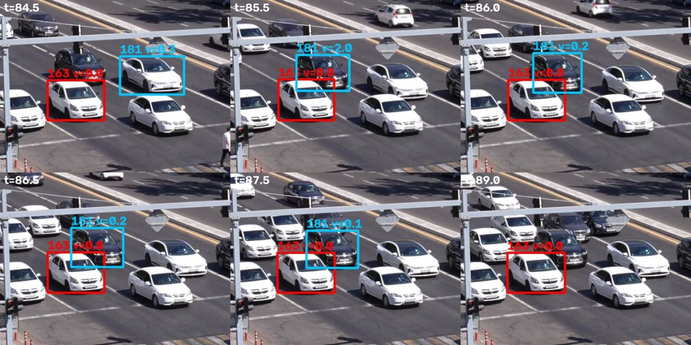
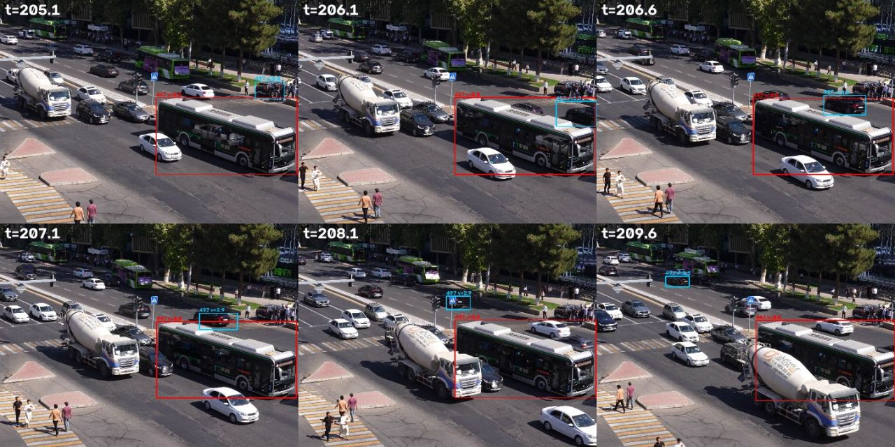
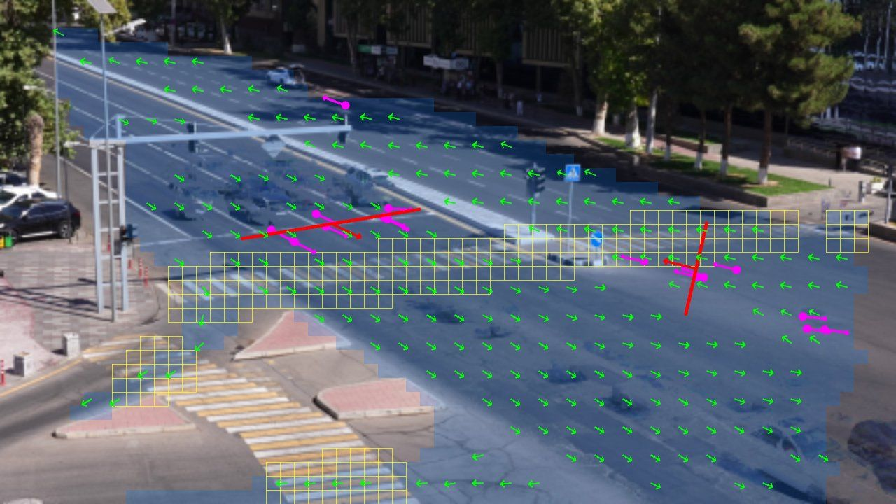
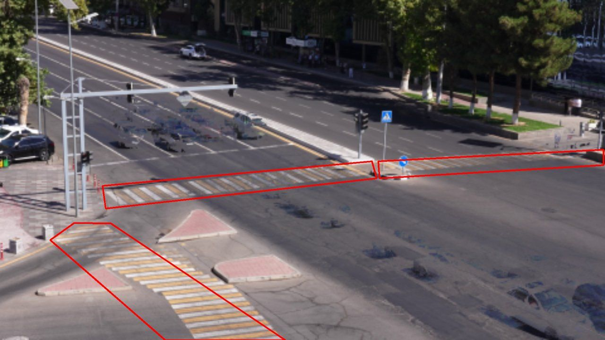

Technical report
One page: what we built, how well it works on our own labels of the sample videos, what worked, what did not, and what we would do next.
What we built
A single command (python run_submission.py --videos DIR --out predictions.json) runs two independent
chains per video. Part A detects road users with a COCO-pretrained YOLO11, tracks them, maps the video
onto a reference view of the junction (the camera is re-aimed between recordings), and applies one rule module per
family of event classes to the trajectories, read against a model of the junction (carriageway, lane directions,
stop lines learned from queues, traced crosswalks) that was learned without labels from the sample videos.
Part B runs its own detector-plus-tracker strictly causally and turns time-to-collision, hard braking,
wrong-way motion and contact into a risk score. Details on the approach page.
Scores on the team's labels
The team labelled all four sample videos (labels/team_labels.txt). The organisers
told us the test videos come from the same junction on the same day, so what the labels teach about this place
carries over. A team member then visited the junction: U-turns are allowed there, so the U-turns first
labelled as illegal turns were dropped, and one of them (a car pushing through pedestrians on a crossing) became
failure_to_yield. That leaves 51 events in five classes, after merging overlapping events of one class as the
official format requires. Scores come from the organisers' evaluate.py, unchanged
(tools/evaluate_dev.py --report); "before" is the pipeline as it was when the labels arrived.
What the labels changed
- stopped_vehicle: the labelled "stopped vehicle" is a car parked all day at the corner kerb, right before a crosswalk, and cut off by the frame border. Rules now count any stop in a drawn no-stopping zone (however routine the spot, border or not) and join a parked car's track across the gaps when passing traffic hides it.
- jaywalking: people cross diagonally between the two crosswalks on the left, a step beside the stripes, and the labels cover the whole crossing (5–18 s). The margin around a crosswalk shrank from two body widths to 0.4, and the event now spans the walk on the carriageway, up to 4 s either side of the off-crosswalk part.
- failure_to_yield: labels start as the car approaches the crossing, about 1.5 s before it reaches the stripes; our events now do too.
- stop_line: labelled when vehicles stand past the stop line, stuck on a crosswalk in a jam. A new rule reports the spell while vehicles that drove in stand on a crossing for 20 s or more (our old "congestion" detection in C3905 was this event).
- solid_line_crossing: the team drew the four solid lane lines of the main approach and its stop line in the scene editor. In this oblique view a box's bottom corners straddle the neighbouring lines even when a car drives straight, so crossings are judged from the box centre with a dead band, and a car caught astride the line by the signal stays in violation while it stands there.
- U-turns: allowed at this junction (checked on site), so the whole view is marked
u_turn_allowedand no U-turn is ever reported as illegal here. - Classes not reported: the labels have no near misses and no congestion, and a class we report that is absent from the test set costs a whole zero in the macro mean; both detectors still run but are not reported.
Is it overfitted? Leave one video out
For each video we chose the thresholds on the other three and scored the held-out one. The same values win in almost every fold, and the pooled held-out F1 is close to the in-sample value.
| Class | Thresholds searched | Held-out F1 (pooled) | All four videos |
|---|---|---|---|
| jaywalking | crosswalk margin 0.25–2 body widths × extension 0–8 s | 0.295 | 0.309 |
| failure_to_yield | lead 0–2 s × tail 0–0.5 s | 0.316 | 0.316 |
Error analysis: the real junction
Our rules were first tuned on short public clips of other roads. On the organisers' camera (a busy signalised junction in Tashkent, filmed in 4K from a building) the first run reported 42 events in two minutes of ordinary traffic. We reviewed every detection class on contact sheets (three frames per event, the tracks involved drawn in) and fixed the causes, not the thresholds. Two findings changed the design.






Detections on the four sample videos (18 min), before and after the review
| Class | Before | After | Main cause and fix |
|---|---|---|---|
| illegal_turn | 21 | 0 | "Rare movements" were tracking artefacts; now only against drawn no-turn rules |
| stopped_vehicle | 13 | 1 | Queues at red lights; fixed by registration (learned waiting areas apply to every framing) |
| road_obstacle | 13 | 0 | Background-difference blobs were queued cars the detector missed; now opt-in |
| failure_to_yield | 13 | 7 | Now requires a walking pedestrian crossing the vehicle's path, within about a lane |
| jaywalking | 13 | 3 | People walk on and beside the stripes: traced crosswalks plus a two-body-width margin |
| near_miss | 9 | 1 | Turns counted as swerves; far-away boxes; the swerve must return to its heading |
| illegal_u_turn | 5 | 0 | Tiny far cars, frame-edge boxes and identity switches: shared track-quality check |
| wrong_way | 4 | 0 | Cars crossing the lanes while turning; must be sustained (3 s, 4 sizes) |
| accident | 2 | 0 | Identity switches and perspective overlap (figures above) |
| red_light / stop_line | 0 | 1 | Needed learned stop lines (queue heads were under-counted); one waiting car is not proof of red |
| congestion | 0 | 1 | – |
| Total | 93 | 14 | "Before" is after the first calibration on all four samples |
Part B on the same videos: frames with risk ≥ 0.5 on C3905 fell from 64 % to under 2 %, and alarms (official merging) on normal traffic from 10 to 1 in 5.7 min of C3896, by requiring a head-on predicted approach, ignoring the far road, and two consecutive analysed frames before an alarm. The one plausible near miss in the samples (C3896, 1:34) still ranks well above ordinary traffic.
What worked
- Reviewing every class on contact sheets. Three frames per detection with the tracks drawn in showed the cause of each false alarm at a glance; almost none of them were threshold problems.
- Registering the view instead of assuming a fixed camera. One homography per video makes the learned map and the traced zones valid for every framing, and costs under a second.
- Learning the road layout from trajectories. A per-cell lane-direction histogram (one vote per vehicle) gives a clean definition of "against the traffic"; stop lines come from where the first car of each lane waits.
- A precision-first stance. The macro F1 averages classes in the test set or in our predictions, so a class we predict wrongly costs as much as a class we miss.
- Test-driven rules. Each rule and each fix has a synthetic-trajectory test (38 tests).
What did not work (yet)
- No depth. Boxes that overlap on screen may be far apart on the road; we cope with size caps and by ignoring the far road, which also means events there are missed.
- Boundaries at IoU 0.7. Start and end times inherit the analysis rate and smoothing (±0.2 s) and, for signal events, the uncertainty of when a phase changes.
- Signal state. The signal heads are small and often not visible, so red is mostly inferred from queues; a red-light runner on an empty approach is invisible to us.
- Rules that depend on signs. Whether a turn or U-turn is legal is written on signs the camera cannot read; without drawn rules we do not predict illegal turns.
What we would do next
- Fine-tune a short-clip video classifier (for example on DoTA and CCD crashes) to re-score accident and near-miss candidates, which rules alone rank poorly.
- Refine boundaries with a second, full-frame-rate pass around each candidate.
- A homography from the lane markings to metres, so speeds, gaps and time-to-collision are physical.
- More dev labels: four sample videos give only a handful of events per class.
Runtime
The unchanged harness on the 4K original of C3905 (127.6 s, 3840×2160, 10-bit 4:2:2 H.264 at 140 Mbit/s), on a shared 4-core cloud CPU without a GPU, three runs. The limit is 3× the video length; the target machine (8 cores, T4) is faster for both decoding and detection. Part B's floor is the harness itself, which decodes every 4K frame; Part A now slows its detection rate once it passes 1.2× real time.
| Run | Part A (× real time) | Part B | Total |
|---|---|---|---|
| 1 | 0.83 | 1.26 | 2.09 |
| 2 | 1.55 | 1.34 | 2.89 |
| 3 | 0.97 | 1.49 | 2.47 |